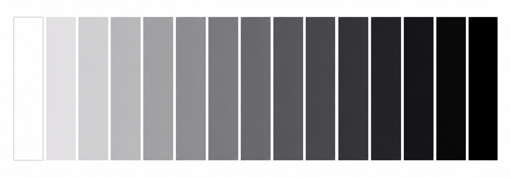
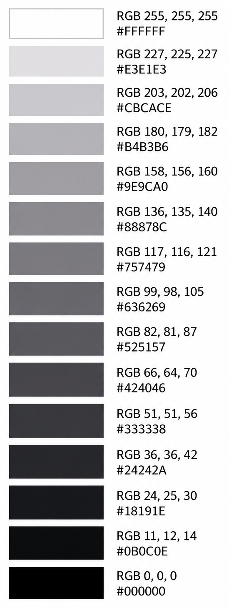

Bitácora
Escala de grises para documentación arquitectónica
La estandarización de una escala de grises permite mantener criterios gráficos consistentes entre planos, proyectos y plataformas de trabajo. Sin embargo, su construcción presenta una dificultad: una secuencia de valores numéricos regulares no necesariamente produce una transición visual uniforme.
Al organizar muestras de claro a oscuro, pueden aparecer tonos apenas distinguibles entre sí y otros separados por cambios de claridad excesivos. Comprender esta diferencia entre representación numérica y percepción visual permite establecer un criterio más adecuado para desarrollar y documentar una paleta.

El problema de la progresión tonal
Una forma habitual de construir una escala consiste en distribuir valores RGB o porcentajes de negro mediante incrementos constantes. Aunque este procedimiento genera una secuencia matemáticamente ordenada, no garantiza que todos los intervalos se perciban de la misma manera.
La dificultad también aparece cuando se reúnen grises seleccionados individualmente por su desempeño en distintos planos. Cada tono puede resultar apropiado para una necesidad particular, pero el conjunto puede presentar separaciones desiguales. Incorporar o sustituir una muestra obliga, entonces, a revisar su relación con las demás.
El objetivo de la estandarización es disponer de una selección reproducible y de una progresión tonal coherente. Para ello, es necesario distinguir entre los valores que describen un color y la claridad con la que se percibe.
Representación del color y percepción visual
RGB describe el color mediante componentes de luz roja, verde y azul. CMYK lo representa mediante proporciones de tintas cian, magenta, amarilla y negra. Ambos modelos permiten especificar colores para determinados medios, pero sus intervalos numéricos no constituyen medidas uniformes de diferencia perceptual.
El sistema visual humano responde de forma no lineal a la luminancia. Por esta razón, una variación constante en los valores de una escala puede producir cambios aparentes de distinta magnitud. En impresión, también intervienen las características del papel, las tintas y las condiciones de reproducción.
La apariencia depende, además, del contexto. Un mismo gris puede percibirse de manera diferente según el fondo, los tonos adyacentes y la superficie que ocupa. Por ello, la evaluación de una paleta debe considerar tanto la secuencia de muestras como su comportamiento dentro de la documentación.
La claridad en el espacio CIELAB
El espacio de color CIELAB, también denominado Lab, incorpora una coordenada de claridad, L*, diseñada para aproximar diferencias perceptuales uniformes. Las coordenadas a* y b* describen las componentes cromáticas en las direcciones verde–rojo y azul–amarillo.
En una escala neutral, a* y b* se mantienen en cero y se modifica L*. Distribuir las muestras mediante intervalos de esta coordenada permite aproximar una progresión en la que los cambios de claridad se perciban más equilibrados.
Al convertir esos colores a RGB, las diferencias numéricas entre muestras pueden variar. Esto responde a la traducción entre espacios de color: una secuencia organizada según la claridad perceptual no tiene por qué conservar incrementos constantes en los canales rojo, verde y azul.
Desarrollo de la escala
La escala presentada se desarrolló como parte de un proceso de estandarización gráfica para documentación arquitectónica. Su elaboración incluyó la revisión de versiones anteriores, la selección de la cantidad de niveles y la comparación de las transiciones entre tonos.
El conocimiento del espacio CIELAB y de su componente L* aportó un criterio para evaluar la claridad de las muestras y revisar las discontinuidades percibidas en las primeras versiones. La secuencia final se trabajó en Adobe Illustrator y se documenta mediante los valores RGB que muestra la aplicación.
La paleta se comparte como un recurso de consulta y uso. Su propósito es facilitar el acceso a una selección definida de tonos, sin establecer asignaciones obligatorias para elementos o categorías del plano. La aplicación de cada gris corresponde al criterio gráfico de cada profesional.
Valores RGB y hexadecimales

La siguiente tabla presenta la escala ordenada de claro a oscuro. Los canales R, G y B se registran por separado para facilitar su introducción directa en aplicaciones como Revit. El código hexadecimal expresa esos mismos valores mediante una notación alternativa, utilizada en herramientas gráficas y entornos web.
Mantener este registro permite incorporar nuevamente los colores cuando una paleta personalizada no está disponible o al trabajar entre distintas versiones del software.
Condiciones de reproducción
Los valores documentados permiten reproducir la configuración de los colores, aunque su apariencia puede variar entre pantallas y sistemas de impresión. Las conversiones entre RGB y CMYK, los perfiles de color y las condiciones de salida influyen en el resultado.
Por ello, la escala debe verificarse en los medios donde se utilizará la documentación. Su registro constituye una base común para mantener la consistencia gráfica y realizar ajustes de reproducción cuando sean necesarios.
← Inicio